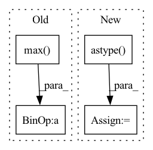

Pattern ID :30560
Before Change
PIL.Image
data = np.array(img.convert("LA"))
data = (data-data.min())/ (data.max() -data.min())*255
if data[..., 0].mean() > 128:
gray = 255*(data[..., 0] < 128).astype(np.uint8) // To invert the text to white
else:After Change
invert = True
gray = 255*(data[..., 0] < threshold).astype(np.uint8)
else:
gray = 255*(data[..., 0] > threshold).astype( np.uint8)
data[..., 0] = 255-data[..., 0]
coords = cv2.findNonZero(gray) // Find all non-zero points (text)
a, b, w, h = cv2.boundingRect(coords) // Find minimum spanning bounding boxIn pattern: SUPERPATTERN
Frequency: 3
Non-data size: 4
Instances Fragment ID: 90364466
Project Name: lukas-blecher/latex-ocr
Commit Name: 07afa63594e3ecda5541065ef3e72a9b469b7bd2
Time: 2022-04-02
Author: 35098797+TITC@users.noreply.github.com
File Name: utils/utils.py
M Class Name: AnonimousClass
N Class Name: AnonimousClass
M Method Name: pad(2)
N Method Name: pad(2)
M Parent Class:
N Parent Class:
M File Name: utils/utils.py
N File Name: utils/utils.py
M Start Line: 83
M End Line: 103
N Start Line: 83
N End Line: 109
Before Change
heatmap = cv2.resize(heatmap[0], _input.shape[2:])
heatmap = heatmap - np.min(heatmap)
heatmap = heatmap / np.max( heatmap)
return heatmap
After Change
heatmap = cv2.resize(heatmap, dsize=_input.shape[-2:], interpolation=cv2.INTER_CUBIC)
if len(heatmap.shape) == 2:
heatmap = heatmap.reshape(heatmap.shape[0], heatmap.shape[1], 1)
heatmap = heatmap.transpose(2, 0, 1).astype( float) / 255 // (N, H, W)
return heatmap
def get_saliency_map(self, _input: torch.FloatTensor, _class: List[int]) -> torch.Tensor: Fragment ID: 90364453
Project Name: ain-soph/trojanzoo
Commit Name: 2bf7c2a2e8acba2592ee17d60d1a59b7bd1bbfe5
Time: 2020-11-24
Author: ain-soph@live.com
File Name: trojanzoo/model/imagemodel.py
M Class Name: ImageModel
N Class Name: ImageModel
M Method Name: grad_cam(3)
N Method Name: grad_cam(3)
M Parent Class: Model
N Parent Class: Model
M File Name: trojanzoo/model/imagemodel.py
N File Name: trojanzoo/model/imagemodel.py
M Start Line: 206
M End Line: 222
N Start Line: 190
N End Line: 212
Before Change
else:
// currently never called
data_params.t_start = np.min(df["ds"].iloc[:split_idx])
data_params.t_scale = np.max( df["ds"].iloc[:split_idx]) - data_params.t_start
if "y" in df:
data_params.y_shift = np.mean(df["y"].iloc[:split_idx].values) if normalize_y else 0.0
data_params.y_scale = np.std(df["y"].iloc[:split_idx].values) if normalize_y else 1.0After Change
if df["ds"].dtype == np.int64:
df.loc[:, "ds"] = df.loc[:, "ds"].astype( str)
df.loc[:, "ds"] = pd.to_datetime(df.loc[:, "ds"])
data_params = AttrDict({})
// default case, use full dataset Fragment ID: 90364463
Project Name: ourownstory/neural_prophet
Commit Name: 1192f2f451030b40c2b8561aa0ffd602479e2852
Time: 2020-06-05
Author: oskar.triebe@merantix.com
File Name: neuralprophet/df_utils.py
M Class Name: AnonimousClass
N Class Name: AnonimousClass
M Method Name: init_data_params(4)
N Method Name: init_data_params(4)
M Parent Class:
N Parent Class:
M File Name: neuralprophet/df_utils.py
N File Name: neuralprophet/df_utils.py
M Start Line: 18
M End Line: 37
N Start Line: 20
N End Line: 44